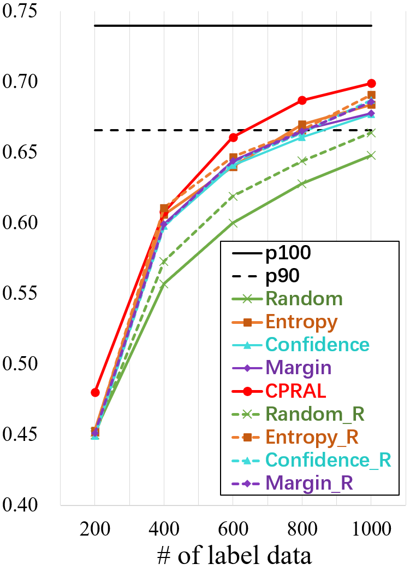

Abstract
Acquiring the most representative examples via active learning (AL) can benefit many data-dependent computer vision tasks by minimizing efforts of image-level or pixel-wise annotations. In this paper, we propose a novel Collaborative Panoptic-Regional Active Learning framework (CPRAL) to address the semantic segmentation task. For a small batch of images initially sampled with pixel-wise annotations, we employ panoptic information to initially select unlabeled samples. Considering the class imbalance in the segmentation dataset, we import a Regional Gaussian Attention module (RGA) to achieve semantics-biased selection. The subset is highlighted by vote entropy and then attended by Gaussian kernels to maximize the biased regions. We also propose a Contextual Labels Extension (CLE) to boost regional annotations with contextual attention guidance. With the collaboration of semantics-agnostic panoptic matching and regionbiased selection and extension, our CPRAL can strike a balance between labeling efforts and performance and compromise the semantics distribution. We perform extensive experiments on Cityscapes and BDD10K and show that CPRAL outperforms the cutting-edge methods with impressive results and less labeling proportion.
Method
The pipeline of the proposed active learning framework. The purple, green and gray stages correspond to the panoptic selection, regional selection and annotation phase. There are four phases in an iteration to finish the samples selection and annotation process. (1): Take unlabeled examples as input and extract multi-scale features to regress a matching rating. (2) Regional Gaussian Attention (RGA): Perform vote entropy, kernel filter, and non-maximum suppression (NMS) on panoptic samples to decide semantics-biased regions. (3) Oracle or our designed label tool can annotate the selected subset with high accuracy and then move them to the labeled pool. (4) Contextual Labels Extension (CLE): Take images, regional labels and masks as input, extract patches to boost annotations with contextual attention as guidance.
Comparisons on Public Datasets
The visual comparisons with SOTA on the Cityscapes and BDD100K datasets with MobileNet and DRN as the backbone.

The performance of regional selection.
Robustness Analysis.
BibTex
@inproceedings{qiao2022cpral,
title={Cpral: Collaborative panoptic-regional active learning for semantic segmentation},
author={Qiao, Yu and Zhu, Jincheng and Long, Chengjiang and Zhang, Zeyao and Wang, Yuxin and Du, Zhenjun and Yang, Xin},
booktitle={Proceedings of the AAAI Conference on Artificial Intelligence},
volume={36},
number={2},
pages={2108--2116},
year={2022}
}